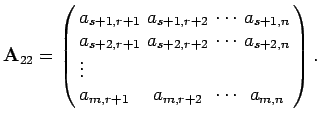

Inhalt Index DeskTop Bronstein

 Optimierung Lineare Optimierung Problemstellung und geometrische Darstellung Formen der linearen Optimierung
Optimierung Lineare Optimierung Problemstellung und geometrische Darstellung Formen der linearen Optimierung


Ein lineares Optimierungsproblem besitzt die folgende allgemeine Form:
| (18.1a) |
Abgekürzte Schreibweise: Die abgekürzte Schreibweise wird Kurzform genannt:
| (18.2a) |
Dabei bedeuten:
 |
 |
| (18.3) |